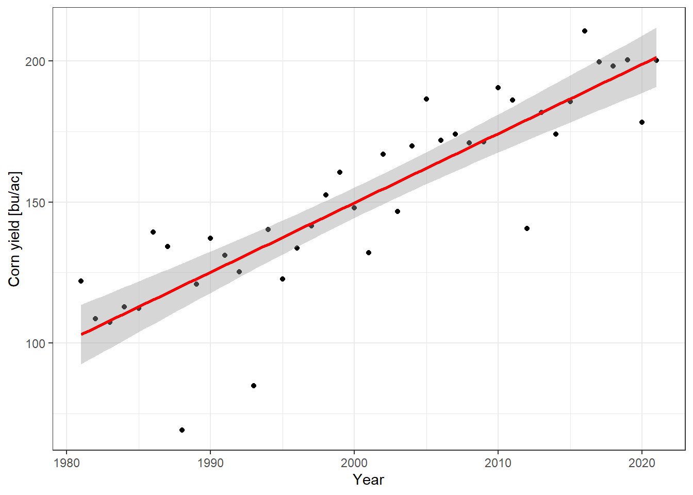
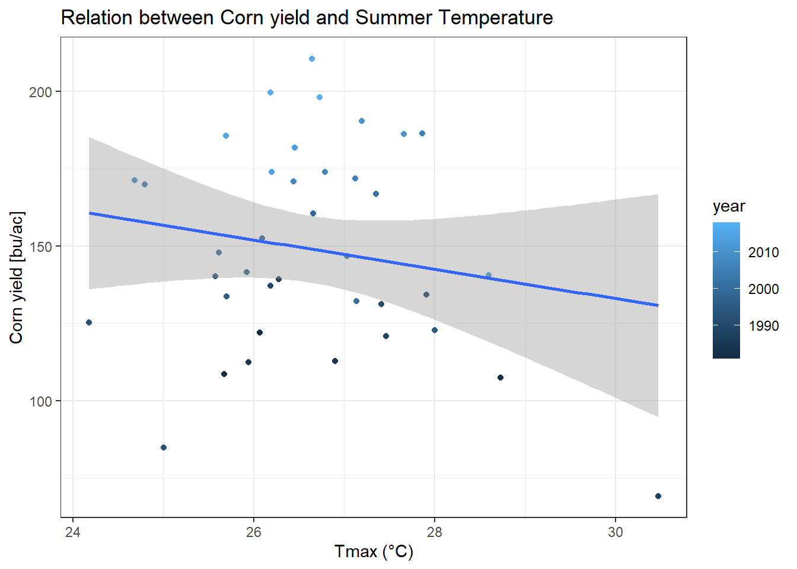

Chapter 3 Hayman Fire Recovery
####-----Reading in Data and Stacking it ----- ####
#Reading in files
files <- list.files('./data',full.names=T)
#Read in individual data files
ndmi <- read.csv(files[1]) %>%
rename(burned=2,unburned=3) %>%
mutate(data='ndmi')
ndsi <- read.csv(files[2]) %>%
rename(burned=2,unburned=3) %>%
mutate(data='ndsi')
ndvi <- read.csv(files[3])%>%
rename(burned=2,unburned=3) %>%
mutate(data='ndvi')
# Stack as a tidy dataset
full_long <- rbind(ndvi,ndmi,ndsi) %>%
gather(key='site',value='value',-DateTime,-data) %>%
filter(!is.na(value))3.1 Question 1
- What is the correlation between NDVI and NDMI? - here I want you to
convert the full_long dataset in to a wide dataset using the
function “spread” and then make a plot that shows the correlation as a
function of if the site was burned or not (x axis should be ndmi)
You should exclude winter months and focus on summer months.
A: NDVI and NDMI are positively correlated. This is easy to understand given that moisture is an important element of vegetation. In particular, the unburned area showed a clearer relationship within the narrow vegetation range than the burned area. The burned area shows a broad plot due to the fire, but still appears to be closely related to moisture.
full_wide <- spread(data=full_long, key='data', value='value') %>%
filter_if(is.numeric, all_vars(!is.na(.))) %>%
mutate(month = month(DateTime),
year = year(DateTime))
summer_only <- filter(full_wide, month %in% c(6,7,8,9))
ggplot(summer_only,aes(x=ndmi, y=ndvi, color=site)) +
geom_point() +
theme_few() +
scale_color_few() +
theme(legend.position=c(0.8,0.8))

Figure 3.1: Correlation between NDVI and NDMI
3.2 Question 2
- What is the correlation between average NDSI (normalized
snow index) for January - April and average NDVI for June-August?
In other words, does the previous year’s snow cover influence vegetation
growth for the following summer?
A: NDVI and NDSI do not appear to show a significant correlation in this study. As shown in the graph, snow cover does not seem to have a significant effect on vegetation growth because ndvi maintains a constant value regardless of increase in ndsi. However, a different pattern can be seen for burned areas. Although it is not certain, it is judged that snow is helpful for the growth of plants in burnt areas remained devastated, because it shows a slight positive correlation between ndsi and ndvi.
NDSI_NDVI <- mutate(full_long, month=month(DateTime),
year=year(DateTime)) %>%
filter((data=='ndsi' & month %in% c(1:4))|(data=='ndvi' & month %in% c(6,7,8))) %>%
group_by(data,site,year) %>%
summarize(mean_value=mean(value)) %>%
spread(key='data', value='mean_value')
ggplot(NDSI_NDVI, aes(x=ndsi, y=ndvi, color=year)) +
geom_point() +
theme_few() +
theme(legend.position=c(0.8,0.2)) +
facet_wrap(~site)
Figure 3.2: Correlation between average NDSI, NDVI
3.3 Question 3
- How is the snow effect from question 2 different between pre- and post-burn
and burned and unburned?
A: As can be seen in the graph above, the vegetation index decreased sharply after the fire, but considering that the correlation between NDSI and NDVI in the wildfire area showed a slight positive correlation in the wide range, the snow impact for growth of plant appears to be greater than before. In un-burned areas, plant growth seems to be constant regardless of the amount of snow. And if you look at the color of the plots, you can see that it is trending less snow these days than it was in the past.
3.4 Question 4
- What month is the greenest month on average? Does this change in the burned
plots after the fire?
A: Before the wildfire, September was the greenest month on average, and after the fire, August was the greenest month in burned area. The cause of the difference is unclear, but it is speculated that the greenest month has changed as forest fires have removed trees that could have remained green until September.
Green_ndvi <- gather(ndvi, key='site',value='NDVI',-DateTime,-data) %>%
filter(!is.na(NDVI)) %>%
mutate(month = month(DateTime)) %>%
group_by(site, month) %>%
summarize(mean_NDVI=mean(NDVI))
ggplot(Green_ndvi, aes(x=month, y=mean_NDVI, color=site)) +
geom_point() +
geom_line(linetype=2) +
theme_few() +
scale_color_few() +
theme(legend.position=c(0.5,0.2)) +
annotate("rect", xmin=8, xmax = 9, ymin = 0.1, ymax=0.46, alpha=.1, fill='blue')

Figure 3.3: The greenest month on average after fire
3.5 Question 5
- What month is the snowiest on average?
A: Before the wildfire, February was the snowiest month on average, and after the fire, January was ranked the snowiest month on average in burned area. The cause of this difference is also unclear as in Question 4, but it is presumed that the density of vegetation influenced the amount of snow cover.
Snow_ndsi <- gather(ndsi, key='site', value='NDSI', -DateTime, -data) %>%
filter(!is.na(NDSI)) %>%
mutate(month = month(DateTime)) %>%
group_by(site, month) %>%
summarize(mean_NDSI=mean(NDSI))
ggplot(Snow_ndsi, aes(x=month, y=mean_NDSI, color=site)) +
geom_point() +
geom_line(linetype=2) +
theme_few() +
scale_color_few() +
theme(legend.position=c(0.5,0.8))
Figure 3.4: The snowiest month on average after fire